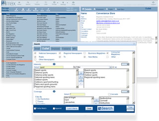

PRMax is the new media contacts database designed to give you maximum accuracy, efficiency, simplicity and affordability!
Now you can try PRMax for free and discover for yourself the value of accurate media contacts information in a simple to use press release distribution system!
Simply register below and you can start searching for journalists, researching publication details, creating media lists and even sending out press releases today and until the end of October - absolutely free!
PRMax provides:
Automatic updates - In depth details for publications and journalists in National and Regional Newspapers, Trade and Consumer Magazines, Radio and TV stations, in fact the entire UK press.
Affordability - PRMax has been priced at £985 per year, reduced for our launch period to just £750, including all updates and press release distribution.
Flexibility - PR projects are often time limited or seasonal so PRMax provides options on rolling one or 12 month subscriptions. |